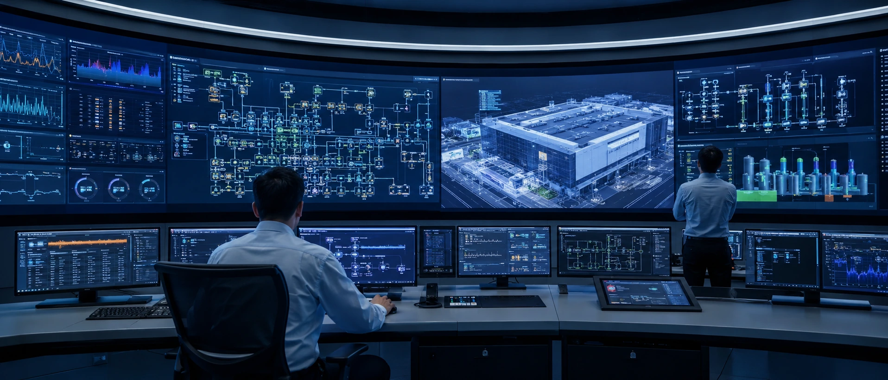
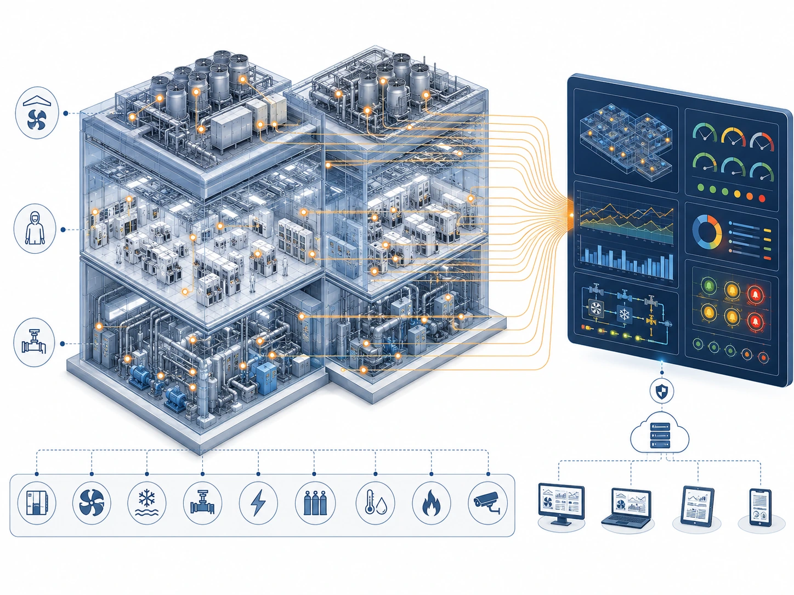

ファシリティシステム統合
数十のサブシステム、数十万点の監視ポイント——FMCS、エネルギー管理、デジタルツインで、工場全体を一枚の画面に。

SCOPE · 業務範囲
私たちが担うこと
S-01
FMCS ファシリティ監視システム
工場全体の監視アーキテクチャ計画、監視ポイントの統合、各サブシステムの通信プロトコルとインターフェースの統一。
S-02
SCADA／PLC アーキテクチャ
制御ネットワークのトポロジー、サーバーと PLC の冗長設計、OT ネットワークのセキュリティゾーニング計画。
S-03
EMS エネルギー管理
電力・用水・ガスの計量アーキテクチャ計画、エネルギー消費ベースラインの構築と省エネ改善分析。
S-04
GDS ガス検知
毒性ガス検知点の配置、避難放送のゾーニング、ガス供給遮断インターロックのロジック設計。
S-05
ライフセーフティ統合
消防受信、緊急時対応手順、加圧避難区画のシステム間連動統合。
S-06
デジタルツイン
BIM×IoT のデータ統合により、3D 可視化ファシリティモデルと設備リアルタイム状態のマッピングを構築。
S-07
予知保全
振動・電流の特徴量から設備の異常兆候を捉え、劣化トレンドの予兆検知を構築。
S-08
ファシリティ情報プラットフォーム
レポートの自動化、アラームの重要度別管理、FMCS／MES などシステム間のデータ連携計画。
VISIBILITY · 可視化
見えてこそ、管理できる。
監視ポイントリスト、命名規則、データアーキテクチャを運用開始後に整備すれば、残るのは10年間分析できない汚れたデータです。 TeraFab は建設段階で工場全体のポイント命名規則、アラーム重要度、データアーキテクチャを定義し、 各サブシステムが引渡し時点で同一の標準に接続されるようにします——運用チームが受け取るのは、初日からクリーンで使えるデータです。

図名 TITLEデジタルツイン監視オービット
システム SYSTEM FAC
レベル LEVEL工場全体 FMCS
タイムコード TC00:00 / 00:08
METHOD · 実行方法
ターンキーコンサルタントの進め方
01
アーキテクチャ定義
工場全体のサブシステムと監視ポイント数を洗い出し、FMCS アーキテクチャ、ネットワーク分割、データ標準を策定します。
02
ポイントリストと仕様策定
命名規則、アラーム重要度、通信プロトコルを統一し、各システムの監視ポイントリストとインターフェース仕様書を作成します。
03
発注・調達と統合管理
FMCS、EMS、GDS などの分離発注におけるベンダー選定、インターフェース調整、統合施工管理を行います。
04
試験・検収・引渡し
全ポイントの個別試験、インターロック機能の検証、プラットフォームの引渡し。操作トレーニングと竣工図書の提出を含みます。
7×24
工場全体の監視体制
100k+
監視ポイント数の計画規模
BIM×IoT
デジタルツイン統合
秒単位
重要アラームの応答設計
＊指標は計画・設計能力の目安です（FAB-1 事例図面を基準）。実際の仕様はプロジェクト要件により決定します。
INTERFACE · 関連システム
FMCS がすべてのシステムをつなぐ
ファシリティ統合の価値はインターフェースにあります——すべてのサブシステムのデータを同一のプラットフォームへ集約すること、それがターンキーコンサルタントの仕事です。
ファシリティ監視の統合や既存システムの更新をご検討ですか？
新設工場の FMCS 計画から、稼働中工場の監視システム更新まで、TeraFab がターンキーコンサルタントとして評価いたします。
お問い合わせ